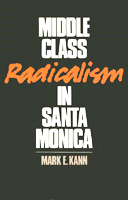

<body bgcolor="#FFFFFF" text="#000000" link="#0000FF" vlink="#CC0000" alink="#CC0000"><center><hr width="350" size="1" align="center" noshade>What happens when affluent middle class citizens give an electoral mandate to leftist radicals?<hr width="350" size="1" align="center" noshade><p><a href="https://cdcshoppingcart.uchicago.edu/Cart/ChicagoBook.aspx?ISBN=9780877224143&&PRESS=temple" target="_top">Buy this book!</a> | <a href="https://cdcshoppingcart.uchicago.edu/Cart/Cart.aspx?PRESS=temple" target="_top">View Cart</a> | <a href="https://cdcshoppingcart.uchicago.edu/Cart/Cart.aspx?PRESS=temple" target="_top">Check Out</a></p><p></p></center><!--none//--><h1>Middle Class Radicalism in Santa Monica</h1>
<h3>Mark E. Kann</h3>
<P>cloth 0-87722-414-5 $34.95, Mar 86, <FONT COLOR=#990033>Out of Print</FONT>
<br>paper 0-87722-526-5 $16.95, Dec 87, <FONT COLOR=#990033>Out of Print</FONT>
<BR> 336 pp
</P><BLOCKQUOTE><I>"[Kann] has...compiled the most complete...account of the Santa Monica experience to date.... [The book] should provide enough of both intellectual assistance and moral support to make people believe that with hard work and a little luck you can sometimes win city hall, not just fight it."</I>
<br>&#151<b><I>The Nation</I></b><I></I></BLOCKQUOTE>
<p>Local bumperstickers proclaim it as "The People’s Republic of Santa Monica, California." CBS-TV’s <I>Sixty Minutes</I> featured a recent segment on the unusual local politics here. Celebrity activists like Tom Hayden and Jane Fonda have drawn attention to this municipal experiment in radical government. But why would affluent, middle class citizens give an electoral mandate to leftist radicals? What can a privileged "bourgeoisie" and radical politicians do to implement a new populism in one U.S. city and promote it nationwide? Mark E. Kann grapples with these questions and shows how Santa Monica’s example suggests new trends in American middle class politics, leftist activism, urban politics, and grassroots struggles for democracy.
<p>The book tells two stories. First it tells of the "odd" marriage between affluent middle class citizens and young radical politicians in Santa Monica in the 1970s and 80s. Second, it analyzes how this local situation concerns broader trends in American society.
<p>The first story could be subtitled: "The Main Street Revolution." Santa Monica stands out from other municipal experiments in radical government because its original base was composed almost exclusively of white "bourgeois" citizens who normally oppose radicals. In addition, Santa Monica activists did not so much identify with exploited groups but tried instead to represent their own privileged class and discover the roots of an indigenous radicalism that would appeal to the prosperous as well as the poor.
<p>In considering the broader picture, Mark Kann analyzes the evolution of the American middle class in this century, particularly its growing ambivalence toward conventional institutions and politics. While the middle class has shown gradual interest in trying alternatives, the values and strategies of the American left have also changed. Activists who participated in the student movement of the 1960s and explored alternative politics in the 70s, have become more sympathetic to the problems of middle class life and more interested in finding solutions. Kann places these middle class radicals in the long tradition of American mavericks including Thoreau, but shows how their involvement with sophisticated political machinery often causes them to lose track of their less prosperous constituents.
<p>This fascinating look at Middle Class Radicalism in Santa Monica examines an impressive effort to pioneer a middle class contribution to democratic change in the United States.
<BR>&nbsp;<h2>Reviews</h2>
<p><I>"Although it is a case study of a political movement in a single American city, </I>Middle Class Radicalism<I> in Santa Monica has a breadth of vision, analysis, and reflection, which makes it particularly important at this crossroads in American political history.... [It] is important reading for activists, scholars, and general readers. Kann is able not only to trace the historical development of this movement in affluent Santa Monica and to chronicle the elections and local government decisions from 1979-1985, but he is able to put them into a perspective that addresses key questions of political analysis, philosophy, and action.... By focusing on the concrete case of Santa Monica, Kann is able to analyze the dream, practice, and promise of this movement. Because of this he may have written the most important case study of a single city and a single political movement of the last decade."</I>
<br>&#151<b>Dick Simpson</b>, <I>Perspective</I>
<p><I>"Though superficially a narrow study of ‘radicalism in one city,’ it actually says more about the nature of, and prospects for, the American Left today, than any book I can remember reading. Kann makes sense of an American phenomenon that has usually been treated with uncomprehending clichés not only by the mass media but also often by the traditional Left. Middle class radicalism, seen through his sympathetic yet critical vision, emerges as an authentically American political style, full of both the contradictions and the promise of American society. I hope that everyone who takes politics seriously will read this book."</I>
<br>&#151<b>Philip Green</b>, Smith College
<BR>&nbsp;<H2>About the Author(s)</H2>
<P><b>Mark E. Kann</b> is Associate Professor of Political Science at the University of Southern California and a political columnist for the <i>Los Angeles Herald Examiner</i>.</P>
<BR><H2>Subject Categories</H2>
<p><A HREF="/tempress/political.html" TARGET="_top">Political Science and Public Policy</a>
<BR><A HREF="/tempress/sociology.html" TARGET="_top">Sociology</a>
</p>
<p align="center"><a href="https://cdcshoppingcart.uchicago.edu/Cart/ChicagoBook.aspx?ISBN=9780877224143&&PRESS=temple" target="_top">Buy this book!</a> | <a href="https://cdcshoppingcart.uchicago.edu/Cart/Cart.aspx?PRESS=temple" target="_top">View Cart</a> | <a href="https://cdcshoppingcart.uchicago.edu/Cart/Cart.aspx?PRESS=temple" target="_top">Check Out</a></p><p><font face="Arial" size="1"><a href="copyright.html" onMouseOver="window.status='Web Copyright Policy';return true;" onMouseOut="window.status=''" title="Web Copyright Policy">&copy;</a> 2015 <a href="http://www.temple.edu" target="new" onMouseOver="window.status='Link to Temple University home page';return true;" onMouseOut="window.status=''" title="Link to Temple University home page">Temple University</a>. All Rights Reserved. http://www.temple.edu/tempress/titles/386_reg.html</font></p>